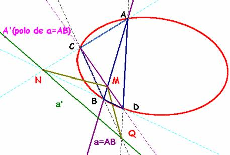

De investigación.
Propuesto
por José Carlos Chavez Sandoval, estudiante peruano
de Matematica Pura en
Problema 280.- Teorema de
Seydewitz. Si
un triángulo se inscribe en una circunferencia, cualquier recta conjugada con
respecto a uno de sus lados corta a los otros dos en puntos conjugados. (El teorema se refiere a una cónica general).
Coxeter, H.S.M. (1971): Fundamentos de Geometría. Limusa-Wiley. SA (México) (pág.
290)
Solución de Saturnino Campo Ruiz,
profesor del IES Fray Luis
de León de Salamanca.-
Se apoya en una propiedad del triángulo diagonal de un cuadrivértice inscrito en una cónica. Remitimos para su demostración al problema 200 d, La cónica de los nueve puntos.
La propiedad es la siguiente:
El triángulo diagonal de un cuadrivértice
inscrito en una cónica es autopolar.
Ahora ya podemos pasar a la demostración.
Recordemos que dos puntos son conjugados respecto de una cónica cuando la polar de uno pasa por el otro y viceversa.
Supongamos que a’ es una recta conjugada con la recta a=AB (basta tomar cualquiera de las que pasan por el polo A’ de a). Su polo M es, por consiguiente, un punto sobre el lado AB. La recta CM corta a la cónica otra vez en D y junto con el triángulo ABC se construye un cuadrivértice ABCD inscrito en la cónica.
El triángulo diagonal MNQ de este cuadrivértice es autopolar, lo que significa que los puntos N y Q yacen sobre la recta a’ polar de M. Asimismo la polar de N es la recta MQ y la de Q es MN: los puntos N y Q son conjugados respecto de la cónica, como se quería demostrar.
